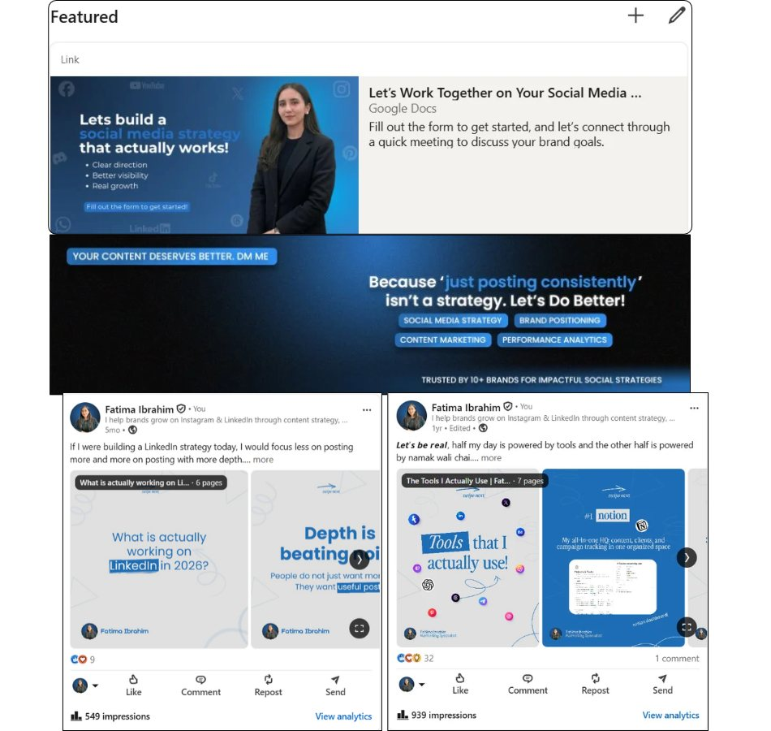
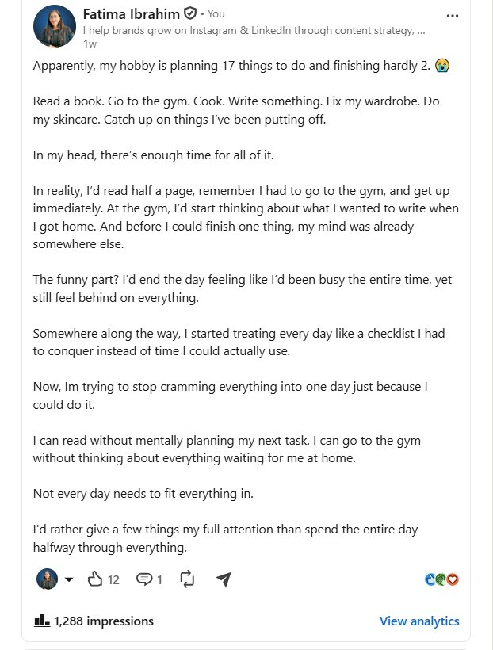

My LinkedIn Profile
LinkedIn Personal Branding & Marketing

1. The Project
I started actively building my LinkedIn presence in 2023 with the goal of establishing myself as a marketing professional, building meaningful connections with other professionals, and creating opportunities through the platform. Rather than treating LinkedIn as just a place to share posts, I have used it as a combination of personal branding, content, networking, and outreach. Over time, I have built my profile around my work in social media and marketing while also sharing my thoughts and experiences around professional growth, productivity, and related topics.
2. My role
I manage every part of my LinkedIn presence myself, from positioning my profile and creating content to publishing, networking, engagement, and outreach. I am responsible for deciding what I want my profile to communicate, what content I want to share, who I want to connect with, and how I build relationships through the platform.
3. What I did
Profile Positioning & Personal Branding
I built my profile around my experience and interests in social media marketing and content, using my headline, banner, profile information, and content to communicate what I do and the type of work I specialize in.
Content Strategy & Creation
I plan and create my own LinkedIn content, with a focus on marketing and professional topics as well as personal perspectives on productivity, success, motivation, and professional growth. I aim to share useful ideas while keeping the content connected to my own experience and perspective.
Consistent Publishing
When I’m active, I publish at least once a week and continue to engage with LinkedIn between posts. My focus is on maintaining a genuine presence rather than simply posting for the sake of consistency.
Networking & Engagement
I actively connect with relevant professionals, engage with their content, and build relationships within my field. Networking has been an important part of growing my professional presence on LinkedIn.
Personalized Outreach
I also use personalized messages to reach out to relevant people rather than relying only on posting and waiting for opportunities to come to me.
Client Acquisition
One of the opportunities that came through my LinkedIn outreach started with a personalized message to a CEO of a travel and tourism company. The conversation developed further through meetings with the company, eventually leading to a client project for Social Marble.
4. Outcome
Over time, LinkedIn has become an important part of my professional presence and a source of both connections and opportunities. My current profile has 7,893 followers, and I continue to build my network through content, engagement, connections, and personalized outreach. Most importantly, my LinkedIn activity has contributed to real business opportunities. One personalized outreach conversation with a CEO developed into meetings and eventually became a client project for Social Marble.
5. Samples


Have a project in mind?
Tell me a little about what you’re working on and where you’re stuck.
Let’s work together